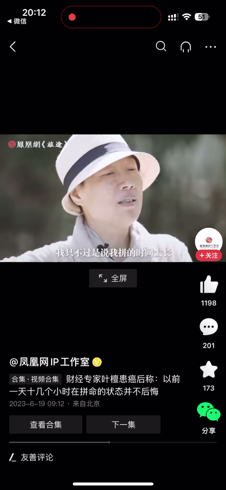
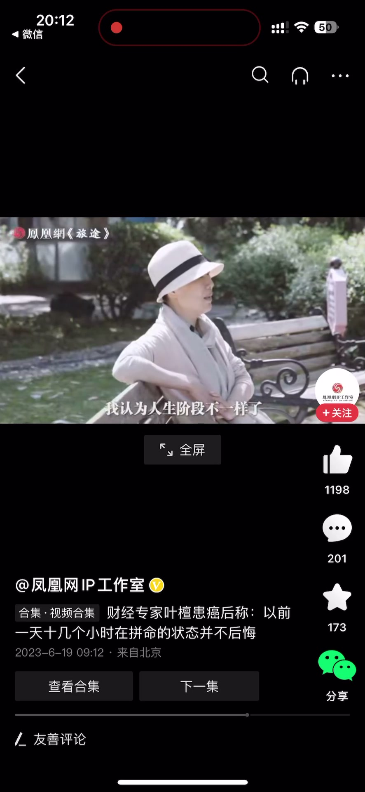
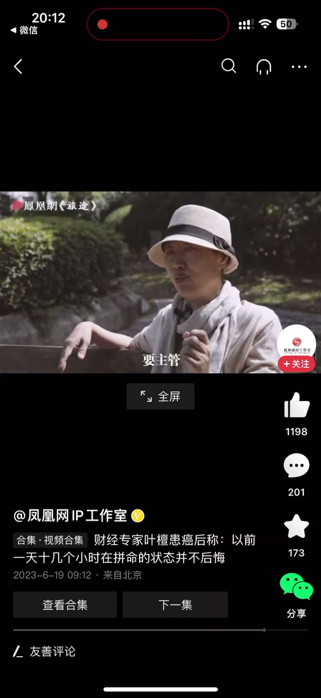
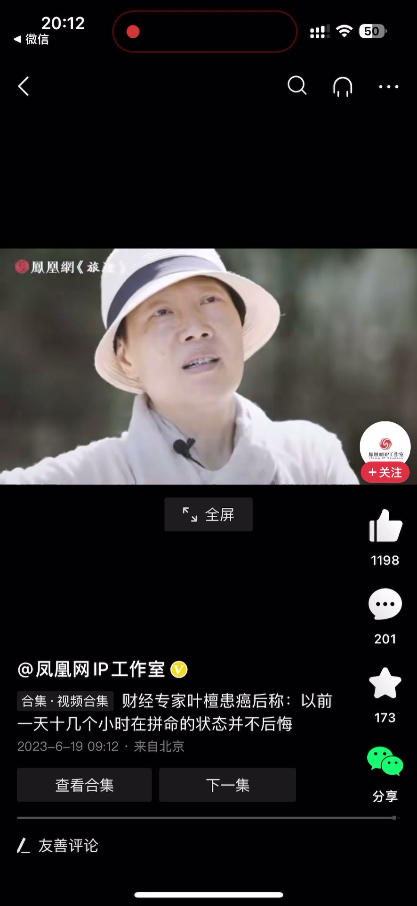

内容要点
一段不到 1 分钟的创业者自述：现在走路成为一个任务，沿着步道一天走七八千步、下午再走就凑到一万步。讲者提醒年轻人不要把他现在养生式的生活当成常态——公司常态是一天十几个小时跑客户、联系业务、做技术储备，他只是拼的时间太长、拼不住了。他并不后悔，因为人生阶段和事业阶段不一样了，才能跳脱出来；如果重新回到当时的状态，他还是会从头到尾那么做。
知识结构
现在走路成为一个任务，沿着步道从院子里走，一般七八千步就走掉了，下午再走一点就凑到一万步。
年轻人不要以为我现在这样是常态；公司常态是一天十几个小时跑客户、联系业务、做技术储备。我只是拼的时间太长拼不住了。回到当时我还会那么拼，不后悔——人生阶段、事业阶段不一样了，所以才能跳脱。
拼命创业与走路养生不是对错之分，是人生与事业阶段的差异：拼过的人才有资格慢下来，而重新选择，他依然会那么拼。
00:00-00:16现在：走路就是一个任务
现在走路啊就是一个任务，我就沿着这个步道从院子里走，一般就七八千步就走掉了，下午再稍微走一走就凑到一万步。
这是一个曾经「一天到晚十几个小时拼命」的人，现在的生活节奏。
00:17-00:39拼命才是常态：阶段不同了
任何年轻人、创业者看到我现在这样状态，不要以为是常态。一天到晚十几个小时要拼命跑客户、联系业务、要做技术储备，那个才是公司的常态。
我只不过是我拼的时间太长，是拼不住了。如果我现在回到当时的状态里头去，我还会那么拼。我并不后悔，说我当初早知道应该怎么怎么样——没有这一说。
我认为人生阶段不一样了、事业阶段不一样了，所以我才能跳脱一点。如果你让我今天开始又要回到公司去主导，我会从头到尾还是得那么做，没有办法的事情。




完整转录（29段）
以下文本由 Whisper medium 模型自动转录，可能存在少量识别误差，已尽可能修正。
现在走路啊就是一个任务
我就沿着这个步道从院子里走
一般就七八千步就走掉了
下午再稍微走一步就掉一万步
任何年轻人啊创业者
看到我现在这样状态
不要以为是常态
就一天到晚十几个小时在拼命
要跑客户
要联系业务
要做技术储备
那个才是公司的常态
我只不过是说我拼的时间太长
是拼不住了
如果我现在回到当时的状态里头去
我还会那么自拔
我并不后悔说
哎呀我当初早知道应该怎么怎么样
没有这一说
我认为人生阶段不一样了
事业阶段不一样了
所以我才能跳脱一点
我如果你让我今天开始
又要回到公司去啊要主管
我会从头到尾
还是得那么做
没有办法的事情
现在走路啊就是一个任务
我就沿着